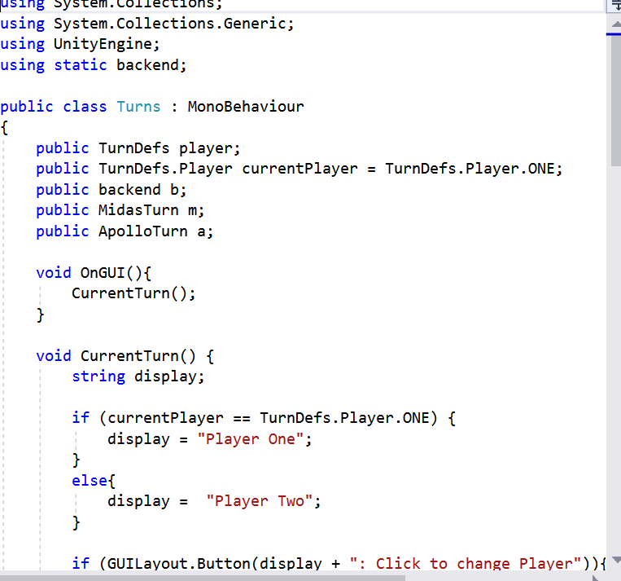

Below are some key examples of games I led or heavily assisted in working on.
OwlQuest is a cute, family-friendly strategic game where you collect various resources on the board to complete enough quests to win the game before other players can. This game was completed in a group of four, where my main contributions were in the wireframe, flowcharting and general game design, and Unity coding as well as more minor contributions to style.

Greedy Midas is a two-player competitive game where each player wants to claim over half of the rooms on the board before the other. This game is currently being made with one other person, and I led this project. The first few prototypes are compete, and is being coded to Unity.
1861: Life on the Battlefield was an ambitious analog strategy board game made in my Game Design class with two other people. One player controls four civilians and the other controls one soldier, and the goal of the game is to survive 15 rounds. While it may be advantageous to be cooperative, the game is meant to be very difficult to survive so the players may turn on eachother to get the resources they need.